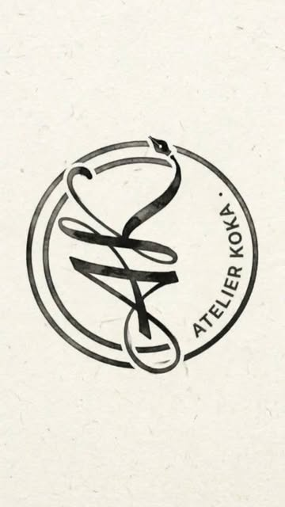

AKASTEVE
Tattoo / drawing / visual archive.
Artist
Work first.
Noise later.
Personal projects, flash and fine line, shaped by traditional influences and African iconography. My drawings explore masks, animals, movement and symbols in black ink.
Based in Fribourg, Switzerland. Follow @atelier_koka.fribourg for current work and updates.

Selected work
Portfolio
A selection of original flash and tattoos from the atelier. Each image links to its Instagram post. Ask me about availability or a personal adaptation.